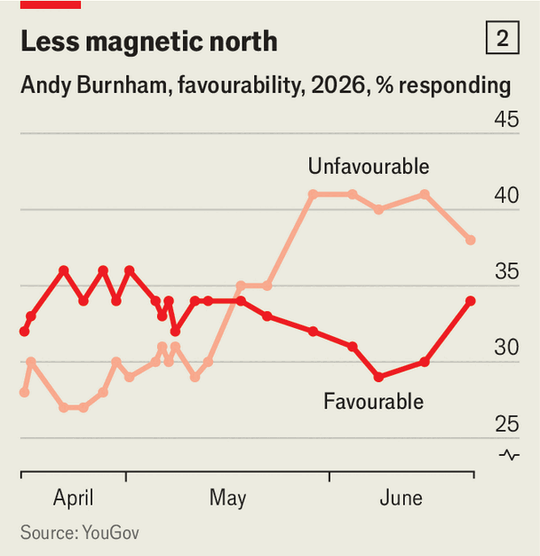

When will Andy Burnham peak?
New prime ministers tend to get a polling bounce. Those don’t always last
June 25th 2026

“Rome is saved!” quipped an opposition MP as Andy Burnham entered the House of Commons on June 22nd. “Turn the water into wine,” said another, as the former Manchester mayor was sworn in as an MP. “He’s not the messiah,” another heckled. Mr Burnham, with his cheeky charm (and a quick-witted “Monty Python” reference), replied: “Naughty boy.”
He won his place in Parliament with a by-election triumph on June 18th. With Sir Keir Starmer stepping down, Labour MPs hope Mr Burnham will take over and work his magic on their own constituencies.

Switching horses is a common tactic. Since 1945, ten of Britain’s 18 prime ministers have taken over between elections. They lasted for an average of two years and 324 days, ranging from Harold Macmillan (nearly seven years) to Liz Truss (49 days). Five went on to win a general election (albeit while losing her majority, in Theresa May’s case) and four to lose one (including Mr Burnham’s ex-boss, Gordon Brown). Ms Truss resigned before an election could be called, but after her the Tories were toast.
The Economist analysed opinion polls since 1955 and found that when the governing party changes prime minister it has got an average poll bounce of 3.8 percentage points (see chart 1). This is partly the reward for removing an unpopular incumbent—with an average 1.8-point uptick after the prime minister’s resignation. When Margaret Thatcher resigned in 1990, the Tories had a ten-point surge. When a fresh prime minister is installed, the ruling party tends to gain a further two points.
But these gains can be fleeting—on average all but disappearing 400 days into the new leader’s time in office. When Mr Brown succeeded Sir Tony Blair in 2007, Labour’s poll numbers rose by nine points. A year later they had collapsed to five points below when Sir Tony left office.

There are already warning signs for Mr Burnham. During the by-election campaign the share of Britons with an unfavourable view of him rose from 30% to 41% in YouGov polls, before ticking down to 38% after his victory (see chart 2). In power he will face the same problems as Sir Keir. His popularity could plunge.
Or he could follow the example of another charismatic former mayor: Boris Johnson. In spring 2019 Mrs May was still struggling to persuade MPs to vote for her unpopular Brexit deal. Mr Johnson was chosen to break the deadlock and reunite Tory voters. It worked. Between May 2019, when Mrs May announced her resignation, and the general election in December 2019, the Conservatives’ support rose from a little over 20% to 44%—enough to secure a landslide victory. If Mr Burnham can unite the left, he could repeat that trick.■
For more expert analysis of the biggest stories in Britain, sign up to Blighty, our weekly subscriber-only newsletter.